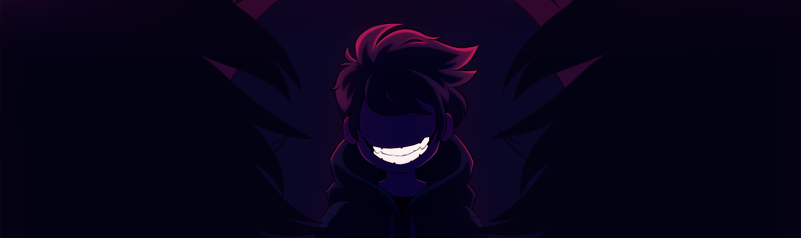

Heartbound is a non-traditional role-playing game about a boy, his dog, secrets, and sanity.
Follow Lore and Baron on their adventures through time and space. Handle combat through a series of unique mini-games reminiscent of Wario Ware. Change the story through exploration and interaction with the world. A massive series of optional cryptographic puzzles that can be solved as a community. Varying environments with unique pixel art, an inspired soundtrack, and tons of extra socks. That awful feeling when you do something terrible to someone who loves you. More gags than you can shake a stick at. Binder can lend you one of his if you don't bring your own.
Heartbound is a non-traditional role-playing game about a boy, his dog, secrets, and sanity.
Follow Lore and Baron on their adventures through time and space. Handle combat through a series of unique mini-games reminiscent of Wario Ware. Change the story through exploration and interaction with the world. A massive series of optional cryptographic puzzles that can be solved as a community. Varying environments with unique pixel art, an inspired soundtrack, and tons of extra socks. That awful feeling when you do something terrible to someone who loves you. More gags than you can shake a stick at. Binder can lend you one of his if you don't bring your own.
Play with a Keyboard and Mouse or your favorite controller.
Founded Pirate Software to follow his longstanding dream of building an indie games company. Thor operates as a programmer, artist, and writer on the team. His body is composed of 98% ramen noodles and hate. Owner of Gadget and Gizmo the nightmare cat duo. He bailed out of a 7 year career at a major Triple A developer to create Heartbound.
The lead artist and mascot wrangler for Heartbound. She is in charge of all in-game assets, concept art, promotional work and miscellaneous Heartbound-related doodlings. She has an affinity for arthropods such as tarantulas and hissing cockroaches. Goblin her glorious rabbit son is Pirate Software's mascot. Previously created all of the art for Champions of Breakfast under the Pirate Software banner.
The lead composer and musical mastermind for Heartbound. Stijn is in charge of all in-game musical scores, sound effects, and other audio components. They collect large amounts of strange and interesting instruments, incorporating them into the game’s audio score when possible. Some say you can hear their melodic compositions coming down from the Dutch mountains, entrancing those whose ears are graced by it.
Early Access
Game Maker: Studio
August 10, 2017